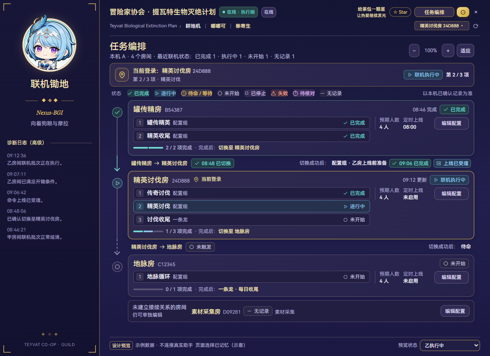
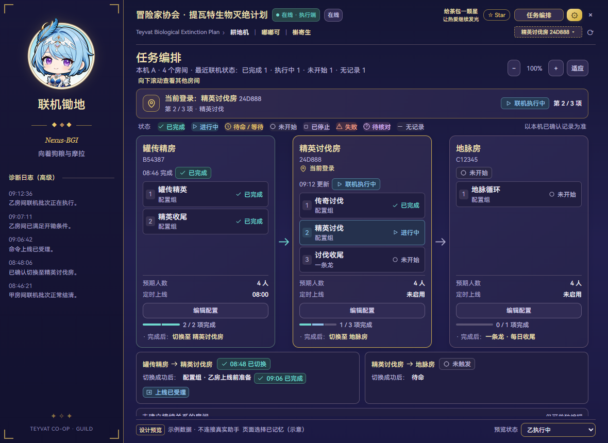

任务编排 · 六个方向
同一套紫金主题、同一组示例状态；不同的是信息组织方式。A/B/C 为完整可交互设计稿，D/E/F 为备选骨架。



任务编排 本机执行端 A
房间
本机任务
状态
完成后
罐传精房
罐传精英
精英收尾
精英收尾
✓ 已完成
✓ 已完成
✓ 已完成
→ 讨伐房
准备任务已完成
准备任务已完成
精英讨伐房
传奇讨伐
精英讨伐
讨伐收尾
精英讨伐
讨伐收尾
✓ 已完成
▷ 执行中
○ 未开始
▷ 执行中
○ 未开始
→ 地脉房
待命
待命
地脉房
地脉循环
○ 未开始
每日收尾
素材采集房
素材采集
无记录
停止
任务编排 房间接续路径
罐传精房✓ 2/2 已完成准备任务已完成
→
精英讨伐房▷ 当前 · 第2/3项精英讨伐
↓ 完成后进入地脉房
素材采集房? 无记录
地脉房○ 未开始
任务编排 当前房间
精英讨伐房 · 24D888
传奇讨伐✓ 已完成
精英讨伐▷ 进行中
讨伐收尾○ 未开始
上一步 · 罐传精房✓ 已切换
下一步 · 地脉房○ 待命
其他 · 素材采集房无记录